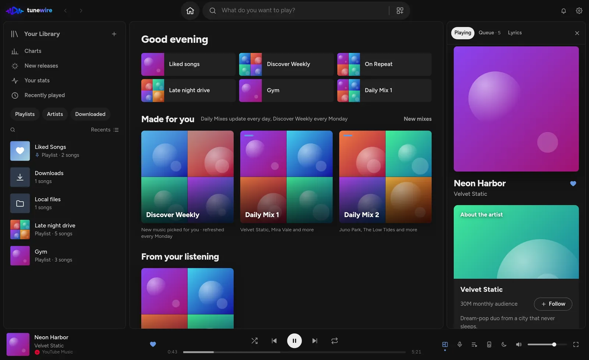

All your music. One beautiful player.
Search YouTube Music, SoundCloud, YouTube and Spotify at once, bring over your Spotify library, and listen together with friends. Your music and listening stay on your computer.
For Windows, macOS and Linux. Free forever.

Every source. One search.
Tunewire finds a song on every platform at once and plays the best version, with no accounts or API keys needed.
One search for everything
YouTube Music, SoundCloud, YouTube, Spotify and your own files, merged into one clean list with duplicates folded together.
Sounds right
Gapless playback, crossfade, loudness levelling and a 10-band equalizer. Songs start in under a second.
Bring your Spotify library
Liked Songs and every playlist, matched to the same recordings, plus Apple Music links and CSV files.
Your stats & Wrapped
Minutes listened, top artists and songs, streaks, and your year in music as a story you can share.
Synced lyrics
Lines light up as they're sung, full screen or next to your queue, with one-click translation.
Make it yours
Themes and sandboxed plugins from the gallery, offline downloads, Last.fm and ListenBrainz scrobbling.
Listen together, from anywhere.
Start a session, send the link, and everyone hears the same song at the same moment.
- Chat, react, vote to skip. Guests suggest songs and the host decides.
- Collaborative playlists. Everyone adds and reorders, and changes show up live.
- Friends, on your terms. People follow you only after you approve, and you choose what they see.
Your music stays yours.
No ads, no tracking, no account needed to listen.
On your computer
Playlists, Liked Songs, history and stats live on your computer, with daily backups and one-file export.
You choose what's shared
An account (Discord sign-in) is only used for sharing and listening together. What friends see is off until you turn it on.
Asked, never assumed
Error reports are off unless you agree, and even then they never include your library, file names or links.
Get Tunewire
Free, for Windows, macOS and Linux. Updates install themselves.
Windows
Windows 10 and 11. Installs in seconds, updates in the background.
Linux
AppImage runs anywhere and updates itself; .deb and .rpm update with your system.
macOS
One app for Apple Silicon and Intel Macs. The first time, right-click Tunewire in Applications and choose Open (it isn’t signed by Apple yet).
Tunewire is a desktop app.
Good to know
Is Tunewire really free?
Yes. There's no subscription, no ads and no premium tier. It's open source on GitHub.
Where does the music come from?
Tunewire plays music from YouTube Music, SoundCloud and YouTube, and your own files. Spotify songs play from the same recording on another platform, or from Spotify itself if you have Premium.
Do I need an account?
No. Everything works without one. A free account (sign in with Discord) is only needed to share playlists, edit playlists together, listen together and follow friends.
What happens to my data?
Your library lives on your computer. Shared playlists store only song names and links, never audio. You can export everything to one backup file at any time.